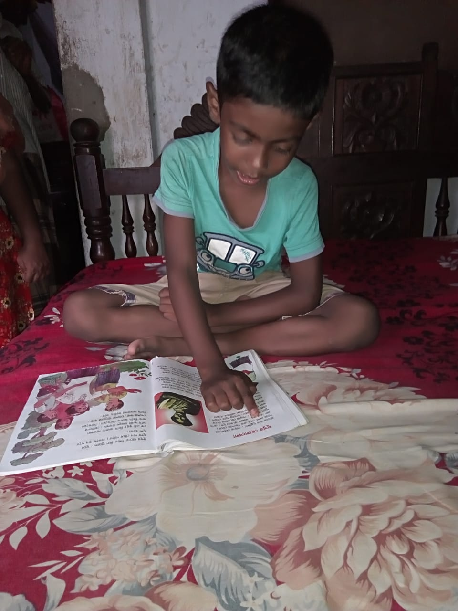
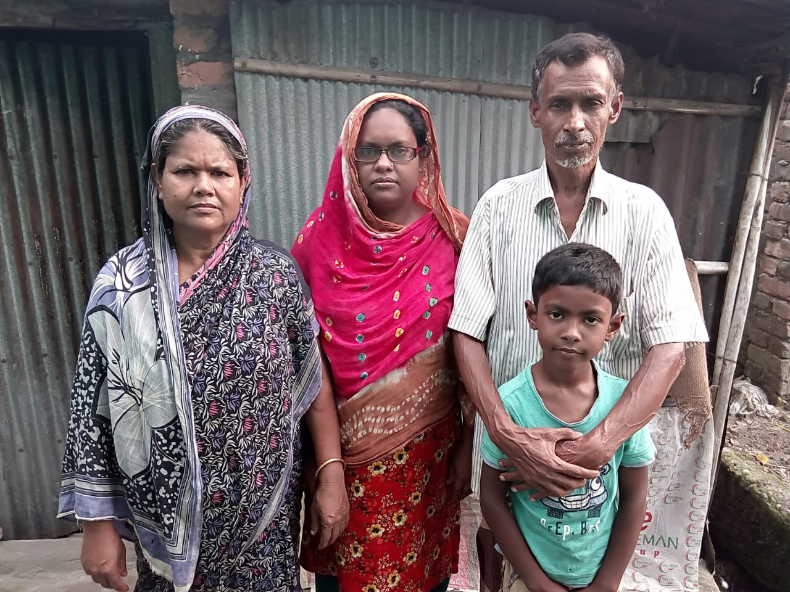

Alif in his home

Alif with his family

Case Study:A Little Boy Name Is Alif
The little boy's name is Alif.His mother's name is Aleya and his grandfather name is Syed Mahabub Alam.His parent's got seperated when he was only one year old.After seperation his mother started living in her maternal house with Alif and his father married another woman.Alif live's in Shahebpara in her grand-parents house.In 2018,He come to Saidpure Learning Center,when he was only four years old.He is a very bright student.He has lots of hope,s and dream in his eyes it can be clearly seen.He always stood up in first position in all exams which held in my center.After passing couple of years.His mother got him admitted in Saint Pauls Kinder Garden School but she was not capable enough to bear the expenses of his studies.That's why she took out her child from that school and got him admitted in a primary school.But the child never forgot us.He still come to our coaching classes,which is managed by Sopna madam,NOw Sopna madam is taking a great care of him.Even I can't forget the child.The bond I shear with him is exceptional.I often go to his house to meet him.I encourage the child always and make him belive in himself.He has a dream,he wants to become a Doctor,and I assure him that he will be a successful Doctor.